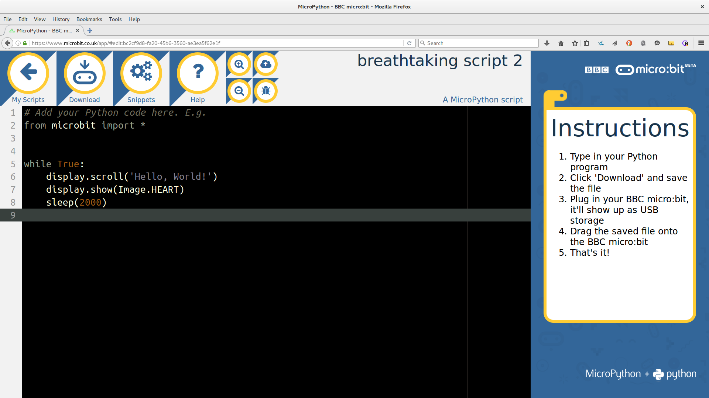
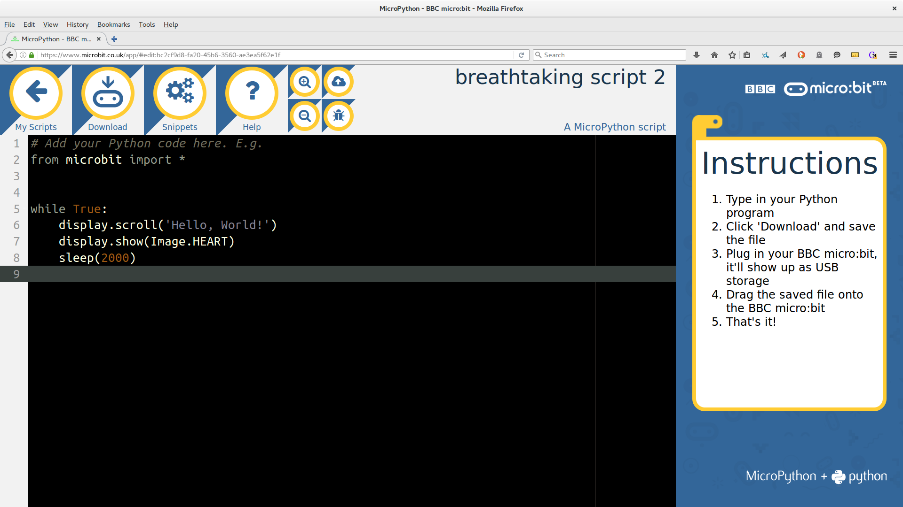
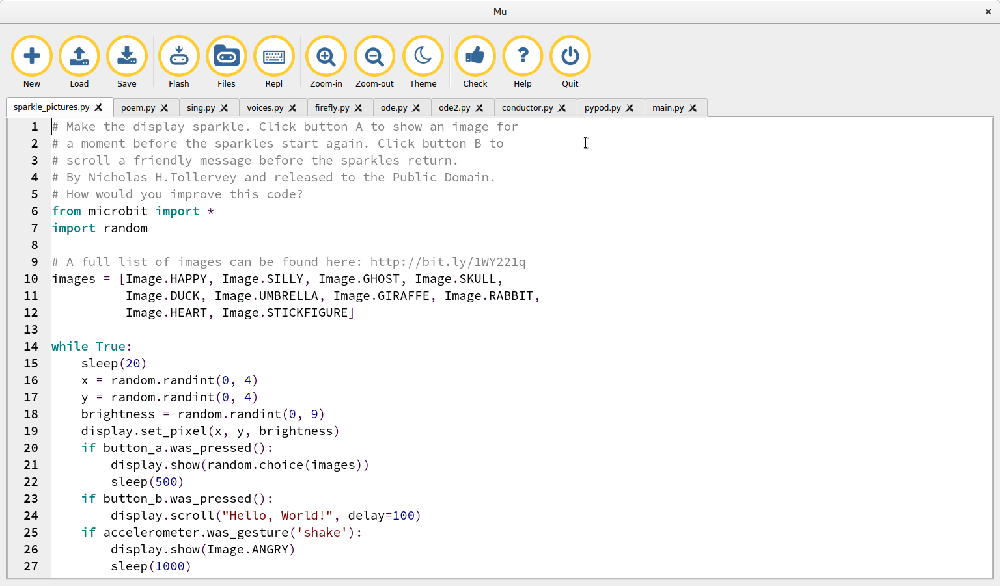
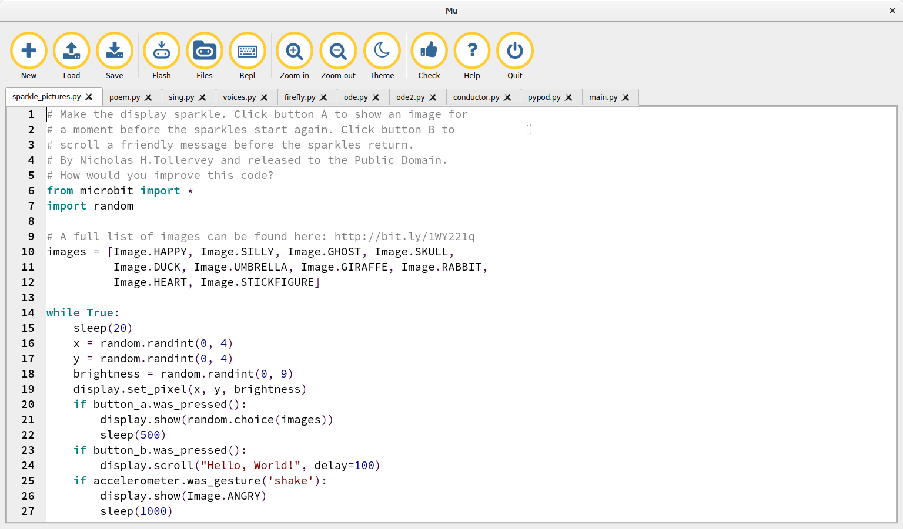
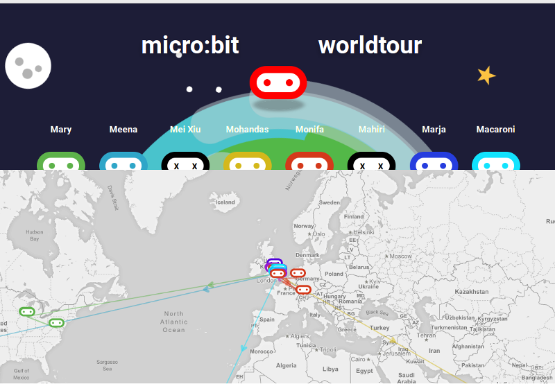
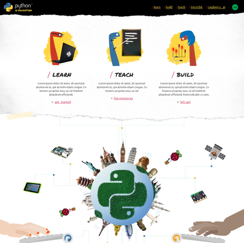

A Million Children
(and MicroPython)
Nicholas H.Tollervey / @ntoll
Last year...
My First Computer


 

 

http://codewith.mu/
PyZeroZero
https://github.com/py-zerozero
- PyGame Zero - A zero-boilerplate 2D games framework.
- GPIO Zero - A simple interface to everyday GPIO components used with Raspberry Pi.
- Network Zero - Making it easy for learners to use simple networking in Python.
TL;DR ~ simple child-friendly APIs on top of real modules.

http://microworldtour.github.io/

http://pythonineducation.org/

"Asking what sort of education and learning our community
supports is how we decide what sort of community we
become.
For it is through education and learning that we engage
with our future colleagues, friends and supporters."
Nicholas Tollervey, 2015. :-)
We need help with:
- The Mu editor - generic Python support!
- FooBarZero and tools - See Dan Pope's talk this afternoon!
- pythonineducation.org - early days. Internationalisation!
- Playful resources that will inspire kids, teachers and developers - content!
- Other cool stuff - Jupyter for micro:bit!
This week:
One more thing...
Everyone gets a micro:bit
(Thank you BBC)
Present your conference ticket at the desk in the Maker Area.
Technical deep-dive into MicroPython follows this keynote!
MicroPython on the BBC micro:bit